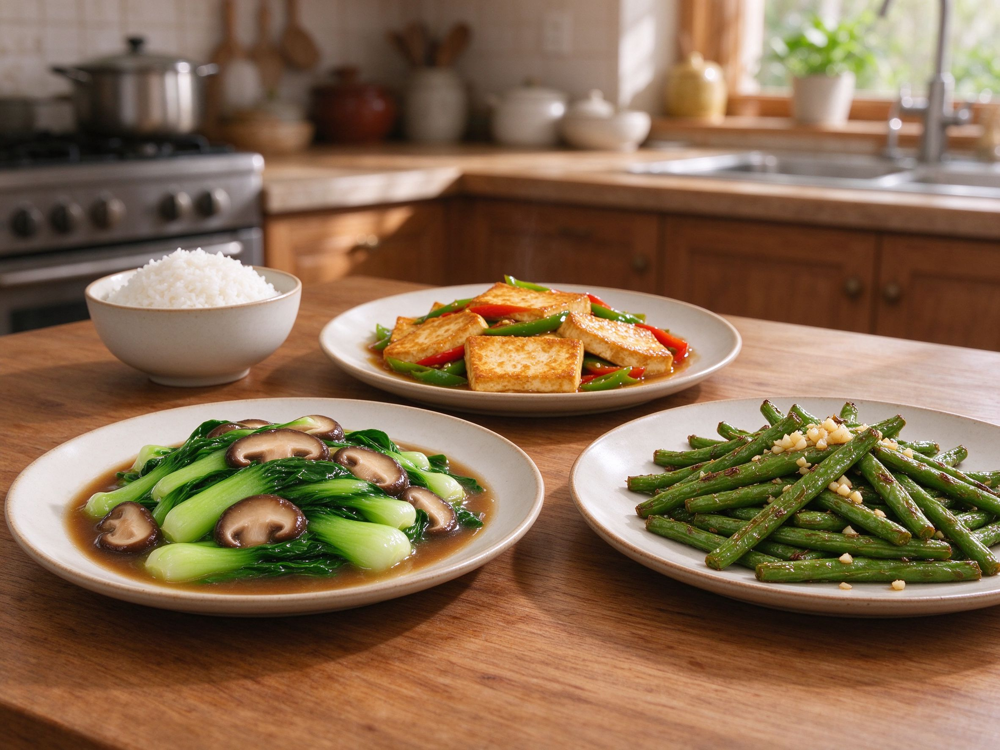

Vegan Chinese Cooking: 10 Plant-Based Dishes That Don't Feel Like Compromise
Chinese home cooking is quietly one of the most vegan-friendly cuisines in the world — the wok's heat, the umami of soy and mushrooms, and the texture of tofu mean you rarely miss meat. Here are 10 plant-based dishes and the pantry tricks that make them sing.
The Vegan Chinese Pantry
Four ingredients do the heavy lifting: light soy sauce for salt and umami, dark soy sauce for color and depth, dried shiitake mushrooms for meaty savoriness (their soaking water is liquid gold), and tofu in all its forms — silken for stews, firm for stir-fries, pressed for texture. See our soy sauce guide for how to choose them.
1. Vegan Mapo Tofu
The classic Sichuan dish swaps ground pork for finely chopped shiitake mushrooms — they brown up with the same savory richness. Keep the doubanjiang (chili bean paste), Sichuan peppercorns, and a slurry to thicken. It's the plant-based version our original mapo tofu readers ask for most.
2. Dry-Fried Green Beans (干煸四季豆)
Blistered, wrinkly green beans wok-fried until slightly charred, with garlic and minced mushroom. The "dry-fried" technique is what makes them taste indulgent — no deep frying needed, just a hot wok and patience.
3. Home-Style Tofu (家常豆腐)
Golden pan-fried tofu triangles braised with mushrooms, peppers, and a glossy soy sauce — sweet, salty, and saucy over rice. Firm tofu sears beautifully; don't rush the browning.
4. Stir-Fried Bok Choy with Garlic
The ultimate 5-minute side: bok choy flash-fried with lots of garlic and a splash of soy. The trick is a screaming-hot wok and quick tossing so the stems stay crunchy and leaves stay bright. Serve with everything.
5. Buddha's Delight (罗汉斋)
The classic Buddhist vegetarian dish: shiitake, wood ear fungus, bamboo shoots, lily buds, and tofu skin simmered in a light sauce. It's a celebration of texture — chewy, crunchy, silky — and traditionally meatless.
6. Vegan Dan Dan Noodles
Our noodle guide covers the basics; the vegan version uses sesame paste, chili oil, soy, and minced mushrooms instead of pork. Numbing, nutty, and dangerously moreish — proof vegan noodles lose nothing.
7. Scallion Oil Noodles (葱油拌面)
Three ingredients: noodles, scallion oil, and soy. Fry sliced scallions slowly in oil until deeply browned, mix with soy and a touch of sugar, toss with noodles. It tastes far richer than its ingredient list suggests.
8. Mushroom "Chicken" and Corn Soup
A vegan take on our classic corn soup — shredded king oyster mushrooms mimic the texture of chicken in the silky egg-free broth. Creamy corn does the rest.
9. Cold Noodles with Sesame Sauce
Chilled noodles, cucumber ribbons, and a creamy sesame-peanut sauce. It's a summer staple in northern China and endlessly refreshing — make the sauce a day ahead if you can.
10. Stir-Fried Rice with Vegetables (素炒饭)
Cold day-old rice, mixed vegetables, and a soy-sesame finish, tossed in a hot wok. The key is high heat and not overcrowding the pan — the same rule that makes our egg fried rice great, minus the egg.
Vegan Chinese cooking isn't about substitutes — it's about leaning into what the cuisine already does best: bold aromatics, layered umami, and texture contrasts. Start with the mushroom mapo tofu and the green beans, and you'll never call plant-based eating a compromise again.